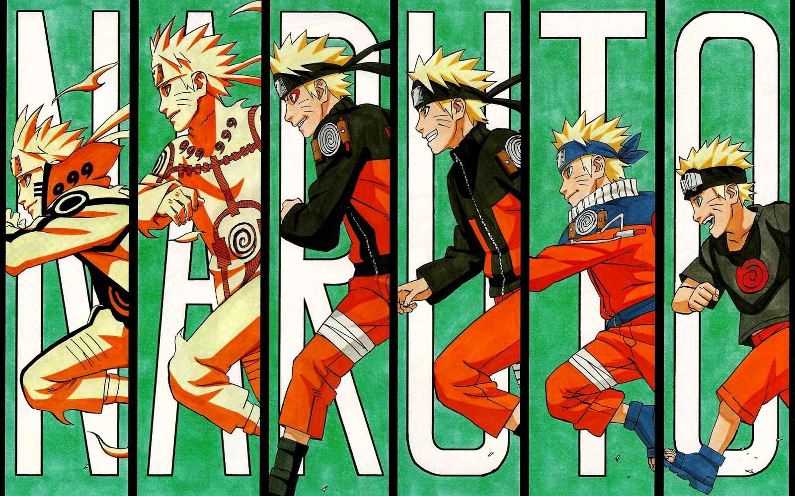

外号：吊车尾、意外性第一的忍者、木叶的英雄、忍界的救世主、预言之子

有着金色短发，蔚蓝双瞳（于后来剧情透露，两项特征皆遗传自波风水门），面有须状纹是其特征，虽为木叶忍者村，但是漩涡一族的，句子的结尾通常会加个“的啦”（でばよ）。由于九尾袭击火之国，已故第四代火影把九尾的阳性查克拉封印在当时还是个婴儿的鸣人体内。第四代火影原本希望木叶忍者村的村民把鸣人视为村子的英雄，但是村民们广泛地视鸣人为曾经破坏村子安宁的九尾的化身，故此一直冷落鸣人。因此，鸣人逐渐养成反叛的个性。 鸣人在学校的成绩差劣，爱恶作剧，时常成为他同学的笑柄，也令导师们十分头痛，更被认定是“木叶的问题学生”。后来，鸣人得到木叶忍者村忍者学校老师伊鲁卡的承认，渐渐成长过来。伊鲁卡的父母双双死在九尾的手下，虽然伊鲁卡有次手上拿着苦无，当时有着想杀鸣人的念头，但是并没有因为其是人柱力而动手。反之，伊鲁卡接受了鸣人，也了解他为什么希望能得到大家的认同，因为伊鲁卡小时候也曾经对大家有同样的期望。伊鲁卡可说是村里第一个能接受鸣人的人，而且也在他身上留下不可泯灭的印象。伊鲁卡就好比是鸣人真正的亲人，因为鸣人通过他来逾越存在自己心中多年的悲伤之情。鸣人还在伊鲁卡面前打败了水木。 鸣人的外向性及他奋力追求自我提升的性格，对他周围的人的生活产生了重大的影响。在故事的开端，鸣人与第三代火影的孙子木叶丸结成兄弟，而木叶丸也在鸣人短暂的指导下领悟，人必须非常努力才会有成功的一天。急性子，时常不三思而后行；但同时是个以自信心，偶尔也以运气超越其对手的滑稽型忍者。鸣人是个幽默的人，尽管他的笑话时时带有“少儿不宜”的内容。他经常以一副嬉皮笑脸的面容面对世界，但是有时候他是以笑容掩饰内心的焦虑，不让别人为他有担心。对于外人而言，他是个随遇而安的人，但好友们往往能看出他埋藏在心中的忧虑。另外，鸣人是个赌运很好，忍术的才能却很差的人，据说他的文笔写作技巧相当于自己的师父自来也。后来在第四次忍战期间于精神领域和六道仙人大筒木羽衣相会时，连羽衣也直言鸣人的容貌和行事性格，皆神似羽衣的次子大筒木阿修罗。另外，鸣人疾风传所穿的外套是自来也在修行时送给他的。 鸣人的生日10月10日是日本号召全民运动的“体育日”，鸣人的活泼好动可能和此有关。
| 擅长 | 绝招 |
|---|---|
| 螺旋丸 | 多重影分身术 |
| 大玉螺旋丸 | 风遁·螺旋手里剑 |
| 仙人模式 | 仙法·风遁·螺旋手里剑 |
| 九尾查克拉模式 | 风遁·超大玉螺旋手里剑 |
| 九喇嘛模式 | 六道仙人模式 |
| 色诱之术 | 六道·地爆天星 |
| 六道·超大玉螺旋手里剑 |